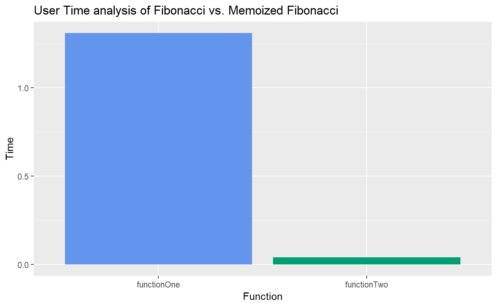
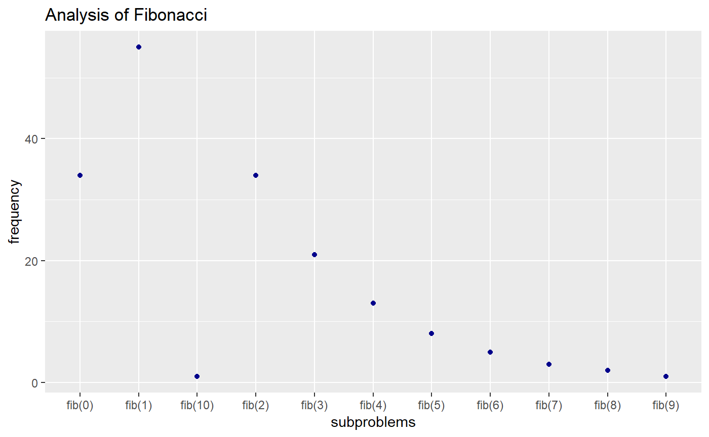
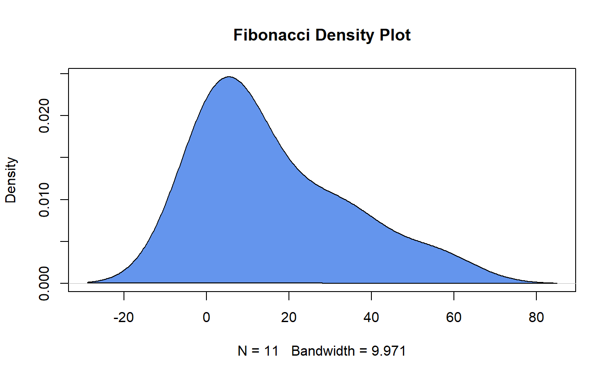

introduction_to_arr.RmdThis package tackles teaching optimization of functions to an aspiring data scientist from a mathematical and more computer sciency perspective. Our teaching tool takes advantage of R’s lazy programming and Non-standard evaluation (NSE), and shows examples by applying concepts to recurrence relations.
We will start with a classic example of an recursive function to familiarize ourselves or recall the basics.
The Fibonacci sequence is a set of numbers that starts with a one or a zero, followed by a one, and proceeds based on the rule that each number (called a Fibonacci number) is equal to the sum of the preceding two numbers.
Given the above definition, the following are true.
fib(0) = 1
fib(1) = 1
fib(2) = fib(1) + fib(0) = 1 + 1
fib(3) = fib(2) + fib(1) = fib(1) + fib(0) + fib(1) = 3
fib(4) = fib(3) + fib(2) = fib(2) + fib(1) + fib(1) + fib(0) = fib(1) + fib(0) + fib(1) + fib(1) + fib(0) = 5
.
.
.
fib(n-1) = fib(n-2) + fib(n-3)
fib(n) = fib(n-1) + fib(n-2)
Now if we express this as code in R, below is the output.
Let’s do a static analysis of the code.
The first if-clause says if the input n is less than or equal to 1, it returns the number. If we look at the long evaluations of fibonacci we did before the code, we see that fib(0) and fib(1) always returned 1.
Now the interesting part here is the else-clause. The else clause is evaluated if the fibonacci number is greater than but NOT equal to 1. If we look inside the return statement thought, we see that it calls two more functions, fibonacci(n-1) and fibonacci(n-2). We know fibonacci is our own original function, so it means that the function is calling itself on a different input!
Recalling our evaluation example above, we know fib(3) first evaluated to:
However, It follows that fib(2) would call the else clause again, therefore evaluating to:
where the final output is 2.
This all happens under the hood as we show by performing a dynamic analysis of the code.
fib(3)
#> [1] 2Now what happens if we want to know what the computation steps look like if we were let’s trying to figure out the 30th fibonacci number? Clearly this will take some time. How about the 50th fibonacci number? Chances are, your RStudio will crash before it can compute it. To understand what is happening under the hood, you can use our package for analysis.
The ARR package allows users to visualize how many subproblems are called when they call a recursive function. The functions below allow users to visualize how important it is to optimize functions using various algorithm optimization methods.
mult Implementation of multiplication using recursive addition.
fib calculates the nth fibonacci number.
createList creates a list of the size of the given parameter. This number should be greater than or equal to n, where n is the nth fibonacci number you are trying to calculate.
memoized_fib calculates the nth fibonacci number using memoization (dynamic programming).
analyzeTime compares the time it takes to run two functions. The intended application is to show the difference between a given function and a more efficient version of it. Further, it is useful when attempting to improve code, in order to test if the changes are having the desired effect.
recursiveCalls is also designed to check written code. Specifcally, it will run a recursive function, and in addition to returning the result, will print out every recursive call. This serves two primary purposes. First, it allows the user to more easily check if the function is working as intended. This is difficult with current R tools, as they only do not show the values being called, simply the call itself. Second, it allows the user to see how many repeated calls occur in the evaluation. This second element is informative for streamlining recursive function, as demonstrated by the fibonacci example. Note: this function is meant to assist in building functions, but if applied to a recursive function with an inordinate amount of calls, the printed results will be difficult to interpret. Try to use this function for examples with less recursive calls to see if the pattern is what is expected.
saveCalls is designed to save the output of recursiveCalls. Since we need to store every recursive call in every recursive sub branch, we require the user to use this function in conjunction with the baseR function, “capture.output”. These two functions need to be run separately one after the other because of how R handles the recursive call stack within its environment.
recDist is designed to take the output of saveCalls and create a dataframe aggregating each recursive call into a frequency table. This allows the user to visualize how many times each function was called.
plotDist takes the output of recDist and plots how the data was distributed throughout the recursive subproblems.
plotDensity takes the output of recDist and plots a density plot of the distribution of the recursive subproblems.
A good example of how these functions can be effectively used is in calculating the nth fibonacci number. Two implementations are provided in this package, one of which makes use of memoization to increase efficiency.
mult multiplies the first and second parameter and returns output. Takes following parameters:
x: first number to be multiplied
y: second number to be multiplied
example: mult(5,6) = 30
fib returns the nth fibonacci number without any code optimization. Takes the following parameter:
n: nth fibonacci number to be calculated. 1-indexed.
Note: Do not attempt to calculate anything above the 30th fibonacci number (Your computer won’t be able to handle the compuation)
example: fib(10) = 55
createList prepares a list for memoized fibonacci. Takes the following parameter:
n: nth fibonacci number to be calculated. 1-indexed.
example: createList(10)
fib_memoized more efficiently returns the nth fibonacci number. Takes the following parameters:
n: nth fibonacci number to be calculated. 1-indexed.
newlist: createList(n)
createList <- function(n){
newlist <- list()
for(i in 1:n){
newlist <- c(newlist,-1)
}
newlist[[1]] <- 1
newlist[[2]] <- 1
return(newlist)
}
# example
createList(10)
#> [[1]]
#> [1] 1
#>
#> [[2]]
#> [1] 1
#>
#> [[3]]
#> [1] -1
#>
#> [[4]]
#> [1] -1
#>
#> [[5]]
#> [1] -1
#>
#> [[6]]
#> [1] -1
#>
#> [[7]]
#> [1] -1
#>
#> [[8]]
#> [1] -1
#>
#> [[9]]
#> [1] -1
#>
#> [[10]]
#> [1] -1fib_memoized <- function(n,newlist){
if(n == 1){
return(newlist[[1]])
} else if(n == 2){
return(newlist[[2]])
} else{
if(newlist[[n]] != -1){
return(list(newlist[[n]],newlist))
} else{
newlist[[n-2]] = fib_memoized(n-2,newlist)[[1]]
newlist[[n-1]] = fib_memoized(n-1,newlist)[[1]]
newlist[[n]] = fib_memoized(n-2,newlist)[[1]] + fib_memoized(n-1,newlist)[[1]]
}
}
return(list(newlist[[n]],newlist))
}
# example
fib_memoized(10,createList(10))[[1]]
#> [1] 55analyzeTime is a code refactoring tool that will take two functions, and graph a time analysis of how long it took to run the functions on the user’s machine. It allows a quick look at multiple ways of writing similar functions in other ways.
Takes the following parameters:
title: Title of the graph.
fill: A vector of length two of colors for the bargraphs.
func1: First function to be analyzed.
func2: Second function to be analyzed.
# example
analyzeTime(title="Fibonacci vs. Memoized Fibonacci", func1 = fib(30), func2 = fib_memoized(30,createList(30)))
#> Function Time
#> 1 functionOne 1.31
#> 2 functionTwo 0.04
#> Loading required package: ggplot2
recursiveCalls takes a recursive function, with its parameters, and returns the result and prints out every recursive call. Takes the following parameters:
recfunc: the recursive function to be called without the parenthesis or the arguments. Must have at least one recursive function call.
…: the parameters of the function to be called.
Examples:
# Multiplication
mult(5,3)
#> [1] 15
recursiveCalls(mult,3,12)
#> [1] "mult(3,12)"
#> [1] "mult(3,11)"
#> [1] "mult(3,10)"
#> [1] "mult(3,9)"
#> [1] "mult(3,8)"
#> [1] "mult(3,7)"
#> [1] "mult(3,6)"
#> [1] "mult(3,5)"
#> [1] "mult(3,4)"
#> [1] "mult(3,3)"
#> [1] "mult(3,2)"
#> [1] "mult(3,1)"
#> [1] "mult(3,0)"
#> [1] 36
# Fibonacci
fib(5)
#> [1] 5
recursiveCalls(fib,5)
#> [1] "fib(5)"
#> [1] "fib(4)"
#> [1] "fib(3)"
#> [1] "fib(2)"
#> [1] "fib(1)"
#> [1] "fib(0)"
#> [1] "fib(1)"
#> [1] "fib(2)"
#> [1] "fib(1)"
#> [1] "fib(0)"
#> [1] "fib(3)"
#> [1] "fib(2)"
#> [1] "fib(1)"
#> [1] "fib(0)"
#> [1] "fib(1)"
#> [1] 5
# Memoized Fibonacci
newlist1 <- createList(5)
fib_memoized(5,newlist1)
#> [[1]]
#> [1] 5
#>
#> [[2]]
#> [[2]][[1]]
#> [1] 1
#>
#> [[2]][[2]]
#> [1] 1
#>
#> [[2]][[3]]
#> [1] 2
#>
#> [[2]][[4]]
#> [1] 3
#>
#> [[2]][[5]]
#> [1] 5
recursiveCalls(fib_memoized,5,newlist1)
#> [1] "fib_memoized(5,1)" "fib_memoized(5,1)" "fib_memoized(5,-1)"
#> [4] "fib_memoized(5,-1)" "fib_memoized(5,-1)"
#> [1] "fib_memoized(3,1)" "fib_memoized(3,1)" "fib_memoized(3,-1)"
#> [4] "fib_memoized(3,-1)" "fib_memoized(3,-1)"
#> [1] "fib_memoized(1,1)" "fib_memoized(1,1)" "fib_memoized(1,-1)"
#> [4] "fib_memoized(1,-1)" "fib_memoized(1,-1)"
#> [1] "fib_memoized(2,1)" "fib_memoized(2,1)" "fib_memoized(2,-1)"
#> [4] "fib_memoized(2,-1)" "fib_memoized(2,-1)"
#> [1] "fib_memoized(1,1)" "fib_memoized(1,1)" "fib_memoized(1,-1)"
#> [4] "fib_memoized(1,-1)" "fib_memoized(1,-1)"
#> [1] "fib_memoized(2,1)" "fib_memoized(2,1)" "fib_memoized(2,-1)"
#> [4] "fib_memoized(2,-1)" "fib_memoized(2,-1)"
#> [1] "fib_memoized(4,1)" "fib_memoized(4,1)" "fib_memoized(4,2)"
#> [4] "fib_memoized(4,-1)" "fib_memoized(4,-1)"
#> [1] "fib_memoized(2,1)" "fib_memoized(2,1)" "fib_memoized(2,2)"
#> [4] "fib_memoized(2,-1)" "fib_memoized(2,-1)"
#> [1] "fib_memoized(3,1)" "fib_memoized(3,1)" "fib_memoized(3,2)"
#> [4] "fib_memoized(3,-1)" "fib_memoized(3,-1)"
#> [1] "fib_memoized(2,1)" "fib_memoized(2,1)" "fib_memoized(2,2)"
#> [4] "fib_memoized(2,-1)" "fib_memoized(2,-1)"
#> [1] "fib_memoized(3,1)" "fib_memoized(3,1)" "fib_memoized(3,2)"
#> [4] "fib_memoized(3,-1)" "fib_memoized(3,-1)"
#> [1] "fib_memoized(3,1)" "fib_memoized(3,1)" "fib_memoized(3,2)"
#> [4] "fib_memoized(3,3)" "fib_memoized(3,-1)"
#> [1] "fib_memoized(4,1)" "fib_memoized(4,1)" "fib_memoized(4,2)"
#> [4] "fib_memoized(4,3)" "fib_memoized(4,-1)"
#> [[1]]
#> [1] 5
#>
#> [[2]]
#> [[2]][[1]]
#> [1] 1
#>
#> [[2]][[2]]
#> [1] 1
#>
#> [[2]][[3]]
#> [1] 2
#>
#> [[2]][[4]]
#> [1] 3
#>
#> [[2]][[5]]
#> [1] 5saveCalls takes all recursive subproblems found in recursive calls and returns character vector containing all recursive subproblems. Takes the following parameters:
filename: the file you saved in capture.output
# example:
capture.output(recursiveCalls(fib,10), file = "output.txt")
fibResult <- saveCalls("output.txt")
fibResult
#> [1] "fib(10)" "fib(9)" "fib(8)" "fib(7)" "fib(6)" "fib(5)" "fib(4)"
#> [8] "fib(3)" "fib(2)" "fib(1)" "fib(0)" "fib(1)" "fib(2)" "fib(1)"
#> [15] "fib(0)" "fib(3)" "fib(2)" "fib(1)" "fib(0)" "fib(1)" "fib(4)"
#> [22] "fib(3)" "fib(2)" "fib(1)" "fib(0)" "fib(1)" "fib(2)" "fib(1)"
#> [29] "fib(0)" "fib(5)" "fib(4)" "fib(3)" "fib(2)" "fib(1)" "fib(0)"
#> [36] "fib(1)" "fib(2)" "fib(1)" "fib(0)" "fib(3)" "fib(2)" "fib(1)"
#> [43] "fib(0)" "fib(1)" "fib(6)" "fib(5)" "fib(4)" "fib(3)" "fib(2)"
#> [50] "fib(1)" "fib(0)" "fib(1)" "fib(2)" "fib(1)" "fib(0)" "fib(3)"
#> [57] "fib(2)" "fib(1)" "fib(0)" "fib(1)" "fib(4)" "fib(3)" "fib(2)"
#> [64] "fib(1)" "fib(0)" "fib(1)" "fib(2)" "fib(1)" "fib(0)" "fib(7)"
#> [71] "fib(6)" "fib(5)" "fib(4)" "fib(3)" "fib(2)" "fib(1)" "fib(0)"
#> [78] "fib(1)" "fib(2)" "fib(1)" "fib(0)" "fib(3)" "fib(2)" "fib(1)"
#> [85] "fib(0)" "fib(1)" "fib(4)" "fib(3)" "fib(2)" "fib(1)" "fib(0)"
#> [92] "fib(1)" "fib(2)" "fib(1)" "fib(0)" "fib(5)" "fib(4)" "fib(3)"
#> [99] "fib(2)" "fib(1)" "fib(0)" "fib(1)" "fib(2)" "fib(1)" "fib(0)"
#> [106] "fib(3)" "fib(2)" "fib(1)" "fib(0)" "fib(1)" "fib(8)" "fib(7)"
#> [113] "fib(6)" "fib(5)" "fib(4)" "fib(3)" "fib(2)" "fib(1)" "fib(0)"
#> [120] "fib(1)" "fib(2)" "fib(1)" "fib(0)" "fib(3)" "fib(2)" "fib(1)"
#> [127] "fib(0)" "fib(1)" "fib(4)" "fib(3)" "fib(2)" "fib(1)" "fib(0)"
#> [134] "fib(1)" "fib(2)" "fib(1)" "fib(0)" "fib(5)" "fib(4)" "fib(3)"
#> [141] "fib(2)" "fib(1)" "fib(0)" "fib(1)" "fib(2)" "fib(1)" "fib(0)"
#> [148] "fib(3)" "fib(2)" "fib(1)" "fib(0)" "fib(1)" "fib(6)" "fib(5)"
#> [155] "fib(4)" "fib(3)" "fib(2)" "fib(1)" "fib(0)" "fib(1)" "fib(2)"
#> [162] "fib(1)" "fib(0)" "fib(3)" "fib(2)" "fib(1)" "fib(0)" "fib(1)"
#> [169] "fib(4)" "fib(3)" "fib(2)" "fib(1)" "fib(0)" "fib(1)" "fib(2)"
#> [176] "fib(1)" "fib(0)"recDist takes the output of saveCalls and creates a dataframe aggregating each recursive call into a frequency table. This allows the user to visualize how many times each recursive function was called. Returns a dataframe containing the frequencies and the subproblems. Takes the following parameters:
result: resulting character vector from saveCalls
# example:
capture.output(recursiveCalls(fib,10), file = "output.txt")
fibResult <- saveCalls("output.txt")
res <- recDist(fibResult)
res
#> subProblems freq
#> 3 fib(10) 1
#> 11 fib(9) 1
#> 10 fib(8) 2
#> 9 fib(7) 3
#> 8 fib(6) 5
#> 7 fib(5) 8
#> 6 fib(4) 13
#> 5 fib(3) 21
#> 1 fib(0) 34
#> 4 fib(2) 34
#> 2 fib(1) 55plotDist takes the output of recDist and plots how the data was distributed throughout the recursive subproblems. Package requires ggplot2. Takes the following parameters:
data: result of recDist
xlabel: x label title of graph (defaults to “x label”)
ylabel: y label title of graph (defaults to “y label”)
title: title of graph (defaults to “Title”)
color: color of points (defaults to “darkblue”)
# example
capture.output(recursiveCalls(fib,10), file = "output.txt")
fibResult <- saveCalls("output.txt")
res <- recDist(fibResult)
plotDist(res, title="Analysis of Fibonacci",xlabel="subproblems",ylabel="frequency")
plotDensity takes the output of recDist and plots a density plot of the distribution of the recursive subproblems. Takes the following parameters:
data: output from recDist
title: title of graph (defaults to “Title”)
color: color of area of density plot (defaults to “cornflowerblue”)
border: color of outline of density plot (defaults to “red”)
# example
capture.output(recursiveCalls(fib,10), file = "output.txt")
fibResult <- saveCalls("output.txt")
plotDensity(recDist(fibResult),title="Fibonacci Density Plot", color="cornflowerblue",border="black")